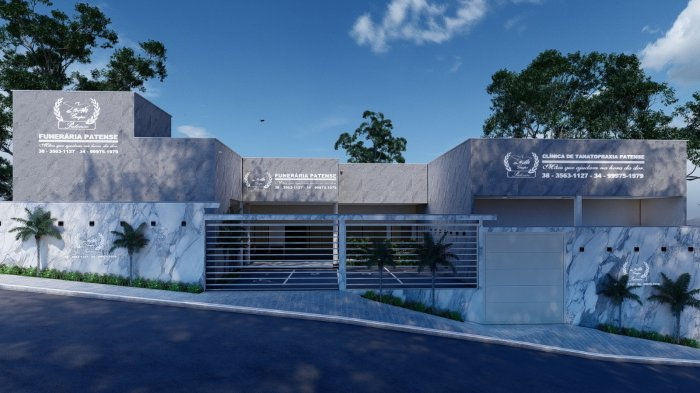

Com mais de 25 anos de experiência e confiabilidade no mercado de serviços funerários, a Jardim Celeste Funerária é a escolha certa para garantir a qualidade e o atendimento de alto padrão que você merece.
Nossa ampla rede de prestadores de serviços funerários em toda a região é cuidadosamente avaliada e selecionada para manter sempre o nosso padrão de qualidade, respeito e atenção.
Além disso, oferecemos uma rede de benefícios diários com profissionais e instituições qualificadas nas áreas de ensino, comércio, saúde e muito mais!
